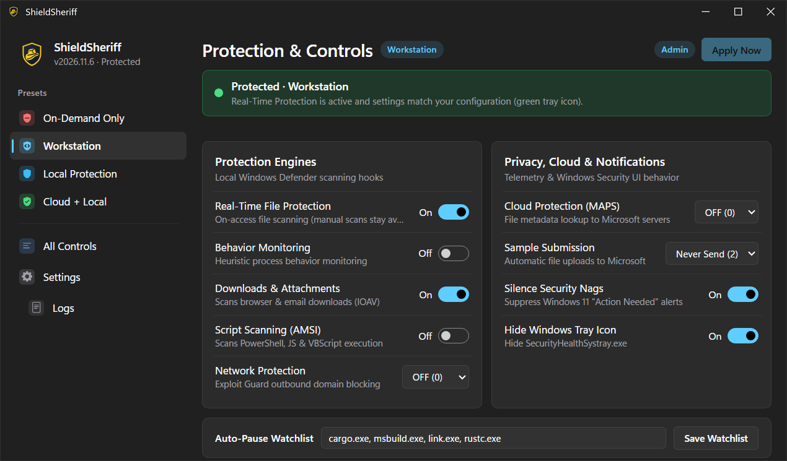

Keep the local protection you want. Turn off Cloud Protection, Sample Submission, or Real-Time Scanning permanently, with zero Windows Security nags and zero update resets.

Filter by use case or compare capabilities side-by-side.
| Capability | ShieldSheriff | Defender Control ↗ | ConfigureDefender ↗ | DefenderUI ↗ |
|---|---|---|---|---|
| Primary Goal | Granular GovernorKeep local protection, drop telemetry & nags | Kill-Switch100% ON or 100% DEAD | Hardening TableCranks cloud & ASR rules up | Full AV SuiteAdds cloud whitelisting overlay |
| Real-Time ON + Cloud & Samples OFF (Nag-Free) | ✓ Default Preset | ✗ No | ⚠ Still Nags | ✗ Cloud-First |
| Silences Windows 11 Toast & Tray Nags | ✓ Yes | ⚠ Kills Service | ✗ No | ✗ No |
| Manual Scans Work When Real-Time Is OFF | ✓ Yes (MpCmdRun) |
✗ Service Dead | ✗ Resets on Reboot | ⚠ Timed Only |
Auto-Pause During Builds (cargo / msbuild) |
✓ Built-In | ✗ No | ✗ No | ✗ No |
| Granular Sub-Engine Toggles | ✓ Tray + UI + CLI | ✗ None | ✓ GUI Only | ✓ GUI Only |
| Auto-Heals Windows Update Resets | ✓ 5s Drift Guard | ✗ One-Shot | ✗ One-Shot | ✓ Resident |
| Works When WinRM / WSMan Is Disabled | ✓ Yes (DCOM) | ✓ Yes | ✗ Fails | ✓ Yes |
| Clean Binary (No AV HackTool Detections) | ✓ Clean Policy/WMI | ✗ Flagged by AVs | ✓ Clean | ✓ Clean |
| Footprint & Scriptable CLI | ✓ ~5 MB + Full CLI | ✗ GUI Only | ✗ GUI Only | ✗ Heavy Suite |
HackTool:Win32/DefnotHow ShieldSheriff governs Windows 11 cleanly compared to common workarounds.
HKLM\SOFTWARE\Policies AND updates MsMpEng.exe in memory via DCOM WMI.
DisableNotifications=1) to silence warnings.
TrustedInstaller Hacks)
Guts WinDefend completely, breaking manual scans and triggering AV malware alerts.
Use the dark-mode Command Center UI, the System Tray Star, or the PowerShell CLI.
# 1. Inspect live Defender status, Tamper Protection, and drift .\shiesh.exe status # 2. Apply the default "Quiet Guardian" preset (prompts for Admin UAC) # Real-Time ON • Cloud OFF • Sample Uploads OFF • All Nags Silenced .\shiesh.exe elect --elevate # 3. Customize individual toggles from the CLI .\shiesh.exe order realtime=on behavior=off script=off cloud=off samples=never nags=off # 4. Auto-pause Real-Time Protection while compilers run .\shiesh.exe order watch=cargo.exe,rustc.exe,msbuild.exe,link.exe # 5. Install the 24/7 background SYSTEM service .\shiesh.exe service install